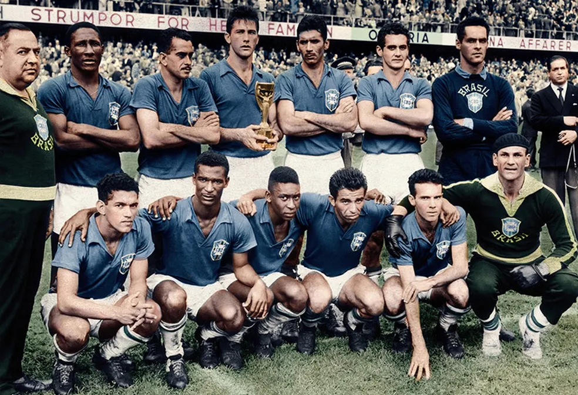

A Primeira Estrela
A Copa do Mundo de 1958, realizada na Suécia, marcou a primeira conquista brasileira. Liderados por craques como Pelé e Garrincha, a equipe encantou o mundo com seu futebol ofensivo. Na final, o Brasil venceu a Suécia por 5 a 2, com dois gols do jovem Pelé e dois de Vavá.
Elenco

Gilmar, Djalma Santos, Bellini, Orlando, Nilton Santos, Zito, Didi, Garrincha, Pelé, Vavá e Zagallo.
Goleadores
Pelé (6 gols), Vavá (5 gols), Garrincha (2 gols)